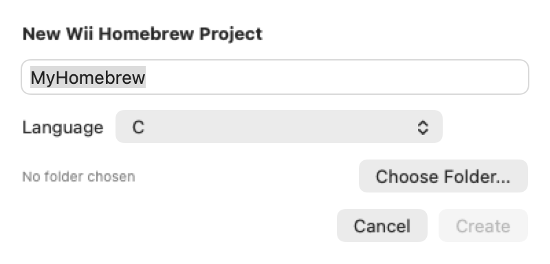

Wii Homebrew
Make your own Wii apps and games in C, C++ or Swift, or with no code at all.
What you can make
- Console apps: plain C or C++ with devkitPro.
- Apps with screens: design the screen visually, then add logic with Swift, nodes or C.
- Games: sprites, text, sound and controllers, drawn by the Wii's graphics chip. See Make a game.
Set up
Install devkitPro with the wii-dev group. Revolution Editor finds it in /opt/devkitpro, or choose it in Settings > Homebrew. You don't need anything else: Revolution Editor does the rest and runs your app in Dolphin.
Create a project
Choose File > New > Wii Homebrew > Project…, name it, and pick a template:

- C or C++: a plain console app.
- C: UI app (designer + nodes) and Swift: UI app: an app with a designed screen.
- Swift: SwiftUI app: an app written as SwiftUI views.
- Game: C, Game: Swift and Game: nodes: a small playable game to start from.
Build and run
Click Run (the play button) in the toolbar to build the app and start it in Dolphin. Build (the hammer) only builds; its menu can also clean. Output appears in the Console, and you get a notification when a build succeeds or fails.
Builds go in the project's out/ folder: out/<name>.dol, plus a ready-made Homebrew Channel package in out/apps/<name>/ (boot.dol, meta.xml and icon.png). To use it on a real Wii, copy that apps/<name> folder to your SD card.
Run via the Homebrew Channel
In a homebrew project the Run button's menu has Run via Homebrew Channel. It builds, copies the app to Dolphin's SD card folder (Load/WiiSDSync/apps/<name>/), turns on Dolphin's SD card folder sync, and boots the Homebrew Channel so you can launch your app the way you would on a real Wii. The Homebrew Channel must be installed in Dolphin first (Tools > Install WAD). Close Dolphin before you click Run.
Right-click any file or folder in the project and choose Add to Homebrew in Dolphin to copy it into your app's folder on that SD card, where the app can read it from sd:/apps/<name>/. Install to Dolphin SD Card in the Build menu copies the last build.
Name, author and icon
Open the Build menu and choose Homebrew Channel Info... to set your app's name, author, version, descriptions and a picture for its icon (scaled to 128 × 48). They're saved as meta.json and icon.png, and every build puts them in the Homebrew Channel package.